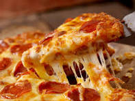

Pizza

Description
Pizza is a dish of Italian origin consisting of a usually round
It is made with different toppings
Ingredients
- 2 cup all purpose flour
- 100 ml tomato ketchup
- 1 tomato
- 2 onion
- teaspoon chilli flakes
- 1 teaspoon baking powder
- 1 teaspoon sugar
- 2 teaspoon virgin olive oil
- 100 gm processed cheese
- 4 mushroom
Steps
- Make the dough: Pizza dough is made with flour, water, fat, and a leavening agent. The dough is important because it creates the crust and rises in the oven. You can activate the yeast to ensure the dough rises and doesn't spoil.
- Prepare the sauce and toppings: The sauce adds flavor and depth to the pizza. You can use tomato sauce, olive oil, or shredded mozzarella cheese.
- Shape the dough: You can roll out the dough and par-bake it for a few minutes to create a crisp crust.
- Add the sauce, cheese, and toppings: Avoid piling on the toppings.
- Bake the pizza: Baking cooks the crust, melts the cheese, and heats the toppings.
- Cool the pizza: You can sprinkle basil on top before serving.